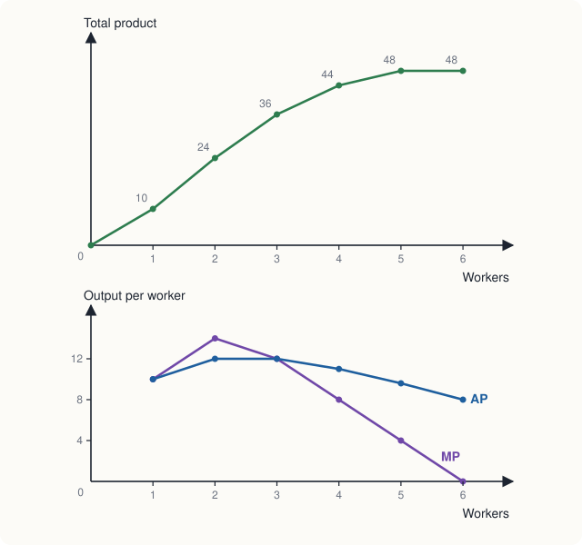
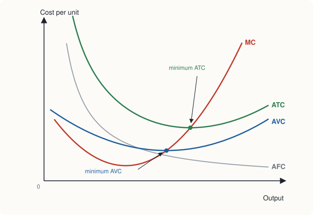
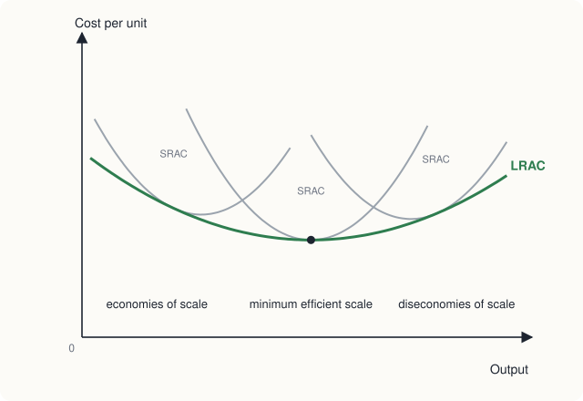

Chapter 7: Production and Costs¶
How output depends on inputs, and how costs depend on output
Learning outcomes
After studying this chapter you should be able to:
- Distinguish explicit from implicit costs and accounting profit from economic profit.
- Distinguish the short run from the long run, and fixed from variable inputs.
- Calculate total, average and marginal product, and explain the law of diminishing marginal returns.
- Calculate fixed, variable and total cost and the average and marginal cost curves from a table.
- Explain why marginal cost cuts average variable cost and average total cost at their minimum points.
- Explain the long-run average cost curve, economies and diseconomies of scale, and returns to scale.
- State the condition for producing a given output at least cost.
7.1 The firm, its costs and its profit¶
Chapters 5 and 6 looked behind the demand curve at the consumer. This chapter and the next look behind the supply curve at the firm: an organisation that buys or hires inputs and turns them into goods or services for sale. Firms range from a single tailor with a sewing machine to companies employing hundreds of thousands of people. Economists usually assume that a firm's goal is to maximise profit:
Total revenue is the price times the quantity sold. To understand profit, we need to understand cost, and economists measure cost differently from accountants.
Explicit and implicit costs¶
- Explicit costs are payments of money to people outside the firm: wages, rent, raw materials, electricity, interest on loans.
- Implicit costs are the opportunity costs of resources the firm already owns, for which no money changes hands: the owner's own time, the owner's money invested in the business, a building the owner owns and could have rented out.
Accountants record explicit costs. Economists include both, because both are given up when the firm uses the resources in this business rather than in the best alternative (Chapter 1).
- Accounting profit = total revenue − explicit costs.
- Economic profit = total revenue − explicit costs − implicit costs.
Example 7.1 Accounting and economic profit
Sunita runs a tailoring business. In a year it earns revenue of ₹12,00,000. She pays ₹8,00,000 for cloth, wages, rent and electricity. She could instead have worked as a salaried designer for ₹3,00,000 a year, and she has ₹5,00,000 of her own savings in the business, which could earn 8 per cent a year in a bank deposit. Find her accounting profit and economic profit.
Solution. Accounting profit \(= 12{,}00{,}000 - 8{,}00{,}000 = 4{,}00{,}000\) rupees.
Implicit costs: forgone salary ₹3,00,000 plus forgone interest \(0.08 \times 5{,}00{,}000 = 40{,}000\) rupees, a total of ₹3,40,000.
Economic profit \(= 4{,}00{,}000 - 3{,}40{,}000 = 60{,}000\) rupees.
The business is worth continuing, but it is much less profitable than the accounts suggest. If her economic profit were zero, she would be earning exactly what she could earn elsewhere.
An economic profit of zero is called normal profit: the firm covers all its costs, including the opportunity cost of the owner's time and money. A firm earning normal profit has no reason to leave the industry, and others have no special reason to enter. In this book "cost" always includes implicit costs, so "profit" means economic profit.
7.2 Production in the short run¶
A firm's production function shows the maximum output it can produce from each combination of inputs, given its technology. Economists distinguish two time horizons.
- In the short run, at least one input is fixed: the firm cannot change it quickly. Typically the size of the factory, the number of machines or the area of land is fixed. Other inputs, such as labour, raw materials and power, are variable.
- In the long run, all inputs are variable: the firm can build a new factory, buy more machines, or close down entirely.
The short run and long run are not fixed lengths of time. For a street food stall, the long run may be a few weeks; for a steel plant or a power station, it may be many years.
7.3 Total, average and marginal product¶
Consider a small workshop that makes chairs with a fixed set of tools and a fixed floor space. Only the number of workers can be changed. Table 7.1 shows how output (total product) depends on the number of workers per day.
| Workers (L) | Total product (TP, chairs) | Marginal product (MP) | Average product (AP = TP/L) |
|---|---|---|---|
| 0 | 0 | ||
| 1 | 10 | 10 | 10.0 |
| 2 | 24 | 14 | 12.0 |
| 3 | 36 | 12 | 12.0 |
| 4 | 44 | 8 | 11.0 |
| 5 | 48 | 4 | 9.6 |
| 6 | 48 | 0 | 8.0 |
Table 7.1. Output of a chair workshop with fixed equipment.
- Total product (TP) is the whole output.
- Marginal product (MP) is the extra output from one more worker: \(MP = \Delta TP / \Delta L\).
- Average product (AP) is output per worker: \(AP = TP/L\).

The law of diminishing marginal returns¶
At first, adding workers raises output more than in proportion: the second worker adds 14 chairs, more than the first, because two people can divide the tasks (one cuts, one assembles) and use the tools better. But from the third worker on, each extra worker adds less than the one before: 12, then 8, then 4, then nothing. With fixed tools and space, workers begin to wait for equipment and get in one another's way.
This is the law of diminishing marginal returns: when more and more of a variable input is added to a fixed input, the marginal product of the variable input eventually falls. It is one of the most reliable regularities in economics. It applies to fertiliser on a fixed field (Chapter 1's farmer), to workers in a fixed factory, and to students in a fixed classroom. It is a short-run law: it arises because some input is fixed.
Common mistake
Diminishing marginal returns does not mean that total output falls, or that later workers are less able. Total output keeps rising as long as marginal product is positive. The extra output falls because each worker has less of the fixed input to work with.
Marginal and average product¶
Figure 7.1 shows a relationship that holds between any marginal and average:
- when MP is above AP, adding a worker raises the average (the second worker, with MP = 14, raises AP from 10 to 12);
- when MP is below AP, adding a worker lowers the average (the fourth worker, with MP = 8, lowers AP from 12 to 11);
- so MP crosses AP at the maximum of AP (between the second and third workers, where AP = 12).
The same logic applies to a cricketer's batting average: if her score in the next innings (the marginal) is above her average, the average rises; if below, it falls.
7.4 Costs in the short run¶
Every input has a cost, so the production function determines how cost depends on output. In the short run, costs divide into two kinds.
- Fixed cost (FC) does not change with output: the rent of the workshop, the cost of the tools, insurance, the salary of a manager on a fixed contract. It must be paid even if output is zero.
- Variable cost (VC) rises with output: wages of production workers, raw materials, power.
- Total cost (TC) is the sum: \(TC = FC + VC\).
From these come four measures per unit of output:
Marginal cost is the extra cost of producing one more unit. Since fixed cost does not change, marginal cost depends only on variable cost.
Table 7.2 gives the costs of a small firm with a fixed cost of ₹60.
| Output (Q) | FC | VC | TC | MC | AFC | AVC | ATC |
|---|---|---|---|---|---|---|---|
| 0 | 60 | 0 | 60 | ||||
| 1 | 60 | 30 | 90 | 30 | 60.00 | 30.00 | 90.00 |
| 2 | 60 | 50 | 110 | 20 | 30.00 | 25.00 | 55.00 |
| 3 | 60 | 66 | 126 | 16 | 20.00 | 22.00 | 42.00 |
| 4 | 60 | 80 | 140 | 14 | 15.00 | 20.00 | 35.00 |
| 5 | 60 | 100 | 160 | 20 | 12.00 | 20.00 | 32.00 |
| 6 | 60 | 126 | 186 | 26 | 10.00 | 21.00 | 31.00 |
| 7 | 60 | 160 | 220 | 34 | 8.57 | 22.86 | 31.43 |
| 8 | 60 | 208 | 268 | 48 | 7.50 | 26.00 | 33.50 |
Table 7.2. Short-run costs of a firm (₹). MC is the cost of each additional unit.
Example 7.2 Reading the cost table
Using Table 7.2, find (a) the marginal cost of the 6th unit, (b) the output at which average variable cost is lowest, and (c) the output at which average total cost is lowest.
Solution. (a) \(MC = 186 - 160 = 26\) rupees. (b) AVC is lowest, at ₹20, at 4 and 5 units; the marginal cost of the 5th unit is also ₹20, equal to AVC there. (c) ATC is lowest, at ₹31, at 6 units. The 6th unit's marginal cost (₹26) is below the ATC of 5 units (₹32), so producing it pulls the average down; the 7th unit's marginal cost (₹34) is above the ATC of 6 units (₹31), so producing it pushes the average up.
The shapes of the cost curves¶

- AFC falls continuously as output rises, because a fixed sum is spread over more units ("spreading the overhead").
- MC is U-shaped. It falls at first, while marginal product is rising, and then rises because of diminishing marginal returns: each extra unit needs more and more of the variable input.
- AVC and ATC are U-shaped. AVC falls while MC is below it and rises once MC is above it. ATC falls for longer than AVC, because falling AFC keeps pulling it down; its minimum is at a larger output than the minimum of AVC.
- The vertical gap between ATC and AVC is AFC, which shrinks as output grows, so the two curves come closer together.
Key idea
Marginal cost cuts both average variable cost and average total cost at their lowest points. When the cost of the next unit is below the average, it pulls the average down; when it is above, it pushes the average up. This is the same rule that links marginal and average product, and it is the most important relationship among the cost curves.
7.5 Why costs and products mirror each other¶
Suppose labour is the only variable input and each worker is paid a wage \(w\). Producing one more unit needs \(1/MP\) extra workers, so
When marginal product is high, marginal cost is low; when marginal product falls, marginal cost rises. Diminishing marginal returns is the reason marginal cost eventually rises. Similarly, AVC is lowest where AP is highest. The cost curves are the product curves turned upside down.
For example, in the chair workshop of Table 7.1, suppose a worker costs ₹280 a day. The second worker adds 14 chairs, so the marginal cost of those chairs is \(280/14 = 20\) rupees each. The fourth worker adds only 8 chairs, so their marginal cost is \(280/8 = 35\) rupees each. The fifth adds 4 chairs at \(280/4 = 70\) rupees each.
7.6 Production and costs in the long run¶
In the long run the firm can vary all its inputs, including the size of its plant. For each possible plant size there is a short-run average cost curve (SRAC). In the long run the firm chooses the plant that produces its planned output at the lowest cost. The long-run average cost curve (LRAC) shows the lowest average cost of producing each output when all inputs can be varied. It is the envelope of the short-run curves: it touches each SRAC at the output for which that plant size is best.

Economies and diseconomies of scale¶
- Economies of scale exist when long-run average cost falls as output rises. The LRAC slopes down.
- Constant returns to scale (in the sense of costs) exist when long-run average cost is unchanged as output rises.
- Diseconomies of scale exist when long-run average cost rises as output rises.
The sources of economies of scale include:
- Specialisation and division of labour. In a large firm, workers and managers can specialise in narrow tasks and become expert at them. Adam Smith's famous example in The Wealth of Nations was a pin factory, in which dividing the work into many separate operations multiplied output per worker.
- Indivisible inputs. Some inputs come only in large sizes: a blast furnace, an assembly line, a research laboratory, a national advertising campaign. Their cost per unit falls as output rises.
- Engineering relationships. The capacity of a tank or a pipe rises faster than the material needed to build it, so larger plants are often cheaper per unit of capacity.
- Purchasing and finance. Large firms can often buy inputs in bulk at lower prices and borrow at lower interest rates.
Diseconomies of scale arise mainly from the difficulty of managing a very large organisation: communication becomes slower, decisions pass through more layers, coordination is harder, and individual workers may feel less responsible for results.
The output at which LRAC first reaches its minimum is called the minimum efficient scale. It matters for the structure of industries. If the minimum efficient scale is small relative to the market (as in tailoring, hairdressing or vegetable farming), there is room for many firms. If it is large relative to the market (as in aircraft manufacture or the distribution of electricity in a city), only a few firms, or even one, can produce at low cost. Chapters 9 and 10 return to this.
Returns to scale¶
Economies of scale are about costs. A closely related idea, returns to scale, is about the production function: what happens to output when all inputs are increased in the same proportion.
- Increasing returns to scale: doubling all inputs more than doubles output.
- Constant returns to scale: doubling all inputs exactly doubles output.
- Decreasing returns to scale: doubling all inputs less than doubles output.
If input prices do not change as the firm grows, increasing returns to scale mean economies of scale, and decreasing returns mean diseconomies.
Caution
Do not confuse diminishing marginal returns with decreasing returns to scale. Diminishing marginal returns is a short-run idea: one input increases while others are fixed. Returns to scale is a long-run idea: all inputs increase together. A firm can have diminishing marginal returns to labour in the short run and constant or increasing returns to scale in the long run.
7.7 Choosing the cheapest combination of inputs¶
In the long run a firm can produce a given output with different combinations of labour and capital: more machines and fewer workers, or the reverse. Which should it choose? The answer is the producer's version of the equimarginal principle of Chapter 5. A firm produces at least cost when the marginal product per rupee is the same for every input:
where \(w\) is the wage and \(r\) the rental price of a unit of capital (a machine-day, for example).
If the extra output from the last rupee spent on capital is greater than from the last rupee spent on labour, the firm can produce the same output more cheaply by using a little more capital and a little less labour.
Example 7.3 Labour or machines?
A garment factory finds that one more worker-day adds 20 shirts and costs ₹400, while one more machine-day adds 50 shirts and costs ₹500. Is it producing at least cost? What should it do?
Solution. Marginal product per rupee: labour \(20/400 = 0.05\) shirts per rupee; capital \(50/500 = 0.10\) shirts per rupee. A rupee spent on machines produces twice as many shirts as a rupee spent on workers, so the factory is not at least cost. It should use more machines and fewer workers. As it does, the marginal product of machines falls and that of labour rises (diminishing marginal returns to each), until the two ratios are equal.
This rule explains why techniques of production differ between countries and change over time. Where labour is cheap relative to machines, firms use labour-intensive methods; where wages are high, they substitute machines for workers. When wages rise, the same calculation pushes firms towards more capital per worker.
7.8 Summary¶
- Economic profit is revenue minus all costs, explicit and implicit. Zero economic profit is normal profit: the owner earns as much as in the best alternative.
- In the short run some inputs are fixed; in the long run all are variable.
- Marginal product is the extra output from one more unit of an input. The law of diminishing marginal returns: with some inputs fixed, marginal product eventually falls. MP cuts AP at the maximum of AP.
- Short-run costs: \(TC = FC + VC\); \(ATC = AFC + AVC\); \(MC = \Delta TC/\Delta Q\). AFC falls continuously; MC, AVC and ATC are U-shaped.
- MC cuts AVC and ATC at their minimum points. \(MC = w/MP\), so diminishing marginal returns make marginal cost rise.
- The long-run average cost curve is the envelope of short-run curves. It falls with economies of scale, is flat around the minimum efficient scale, and rises with diseconomies of scale.
- Returns to scale describe how output responds when all inputs increase together.
- A firm minimises cost when \(MP_L/w = MP_K/r\).
7.9 Exercises¶
Exercise 1
A doctor leaves a hospital job paying ₹18,00,000 a year to open a clinic in a building she owns, which she could have rented out for ₹2,40,000 a year. The clinic's revenue is ₹30,00,000, and she pays ₹9,00,000 a year for staff, equipment and medicines. Find her accounting profit and economic profit.
Answer
Accounting profit \(= 30{,}00{,}000 - 9{,}00{,}000 =\) ₹21,00,000. Implicit costs \(= 18{,}00{,}000 + 2{,}40{,}000 = 20{,}40{,}000\) rupees. Economic profit \(= 21{,}00{,}000 - 20{,}40{,}000 =\) ₹60,000.
Exercise 2
Complete the marginal and average product columns.
| Workers | Total product |
|---|---|
| 1 | 8 |
| 2 | 20 |
| 3 | 30 |
| 4 | 36 |
| 5 | 40 |
Answer
MP: 8, 12, 10, 6, 4. AP: 8, 10, 10, 9, 8. Diminishing marginal returns set in with the third worker. MP (10) equals AP (10) at three workers, where AP is at its maximum.
Exercise 3
A firm's fixed cost is ₹100 and its variable costs for outputs 1 to 5 are ₹40, ₹70, ₹96, ₹128 and ₹170. Find MC, AVC and ATC for each output. At what output is ATC lowest?
Answer
TC: 140, 170, 196, 228, 270. MC: 40, 30, 26, 32, 42. AVC: 40, 35, 32, 32, 34. ATC: 140, 85, 65.33, 57, 54. ATC is lowest at 5 units (₹54) within this range; it is still falling because MC of the 5th unit (₹42) is below the ATC of 4 units (₹57).
Exercise 4
Explain why the marginal cost curve passes through the lowest point of the average total cost curve.
Answer
When the cost of an extra unit (MC) is below the average, producing it lowers the average; when it is above, it raises the average. ATC therefore falls while MC < ATC and rises while MC > ATC, so it is at its minimum where MC = ATC.
Exercise 5
A firm pays its workers ₹500 a day. The tenth worker hired adds 25 units of output. What is the marginal cost of output at this point? If the eleventh worker adds only 20 units, what happens to marginal cost?
Answer
\(MC = w/MP = 500/25 =\) ₹20 per unit. With the eleventh worker, \(MC = 500/20 =\) ₹25 per unit: marginal cost rises because marginal product falls.
Exercise 6
Distinguish diminishing marginal returns from decreasing returns to scale, with an example of each.
Answer
Diminishing marginal returns is short-run: adding more of one input (workers) to a fixed input (a kitchen of fixed size) eventually adds less and less output. Decreasing returns to scale is long-run: increasing all inputs in proportion (doubling the kitchen, the cooks, the stoves and the ingredients) raises output by less than in proportion, for example because a very large restaurant is harder to manage.
Exercise 7
At a firm's current input mix, \(MP_L = 30\), \(w = 600\), \(MP_K = 45\) and \(r = 900\). Is the firm producing at least cost?
Answer
\(MP_L/w = 30/600 = 0.05\) and \(MP_K/r = 45/900 = 0.05\). The ratios are equal, so the firm is producing its output at least cost.
7.10 Quiz¶
Check your understanding of Chapter 7
Exercise 1
Which of these is an implicit cost?
- wages paid to workers
- interest paid on a bank loan
- the salary the owner gives up by running the firm
- rent paid for the shop
Answer
the salary the owner gives up by running the firm
Exercise 2
The law of diminishing marginal returns applies
- only in the long run
- when at least one input is fixed
- when all inputs increase together
- only to agriculture
Answer
when at least one input is fixed
Exercise 3
Total cost rises from ₹250 to ₹285 when output rises from 10 to 11 units. What is the marginal cost of the 11th unit, in rupees?
Answer
35 / ₹35
Exercise 4
Average fixed cost
- is U-shaped
- falls continuously as output rises
- rises with output
- equals marginal cost
Answer
falls continuously as output rises
Exercise 5
The marginal cost curve cuts the average total cost curve
- at the maximum of ATC
- at the minimum of ATC
- where ATC equals AFC
- nowhere
Answer
at the minimum of ATC
Exercise 6
If long-run average cost falls as output rises, the firm has
- diseconomies of scale
- economies of scale
- diminishing marginal returns
- normal profit
Answer
economies of scale
Exercise 7
Fixed cost is ₹200 and total cost at 40 units is ₹600. What is average variable cost at 40 units, in rupees?
Answer
10 / ₹10
Variable cost is 600 − 200 = 400, and 400 ÷ 40 = 10.